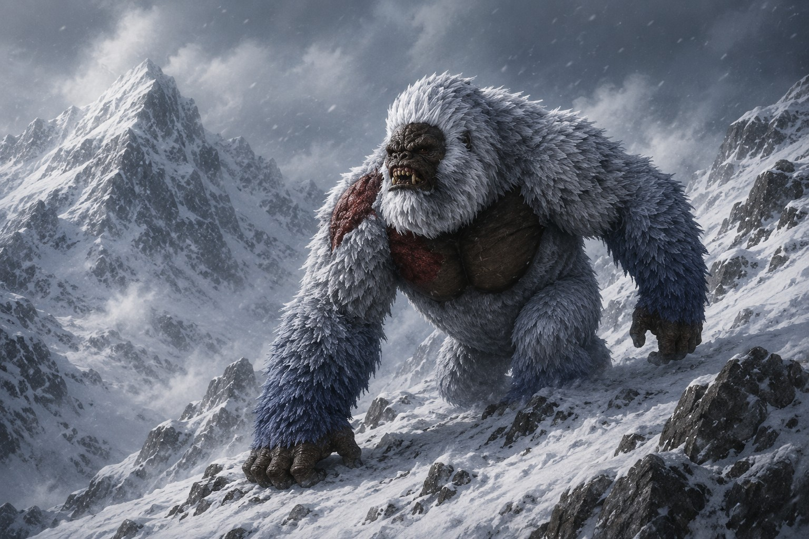
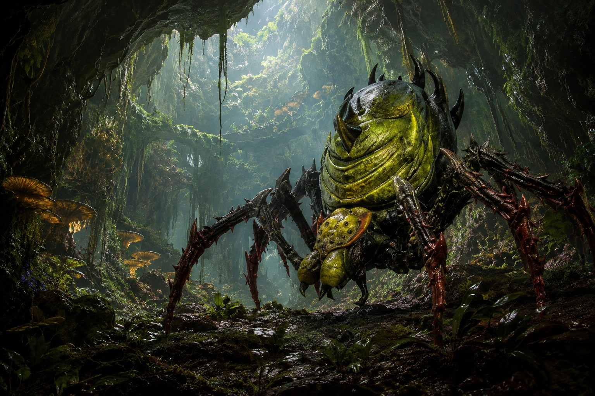
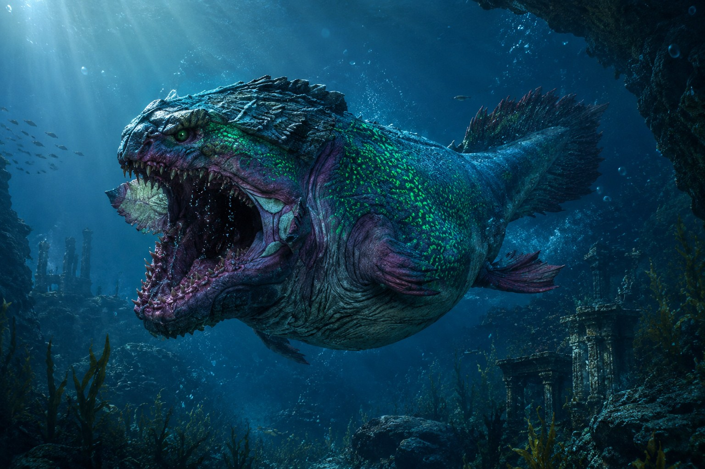

Bestiaire légendaire du serveur
Les
Demi-dieux
Huit puissances anciennes. Huit boss légendaires. Chacun règne sur un domaine du monde et porte une histoire que les royaumes auraient tort d’oublier.
 ValmyrFeu et volcans
ValmyrFeu et volcans
GorvakGlace et hiver
SylvaraNature et équilibreChronyxiaTemps et sable
AbyssarMers et abyssesDorgathÂmes et destructionVarlunaTempêtes et espritMogriffePeur et rêvesboss documentés5 forces anciennes · 3 fléaux démoniaques
Repères rapides
Les huit légendes
Identifiez leur nature, leur domaine et leur dernier territoire connu avant d’ouvrir leurs archives complètes.
Valmyr
Le Dragon des Flammes Éternelles
Feu et volcans↓Gorvak
Le Maître des Glaces Infinies
Glace et hiver↓Sylvara
La Reine des Racines
Nature et équilibre↓Chronyxia
La Manticore des Sables du Temps
Temps et sable↓Abyssar
Le Maître Absolu des Mers
Mers et abysses↓Dorgath
Le Dévoreur d’Âmes
Âmes et destruction↓Varluna
La Souveraine des Cieux Obscurs
Tempêtes et esprit↓Mogriffe
Le Chasseur de Cauchemars
Peur et rêves↓Archives du monde
Origines, pouvoirs et prophéties
Ouvrez chaque dossier pour découvrir le récit complet transmis par les anciens, les voyageurs et les survivants.
Les puissances primordiales
Feu, glace, nature, temps et océans : cinq êtres dont l’existence semble liée aux forces profondes du continent.
Dragon colossal · Feu et volcansValmyrLe Dragon des Flammes ÉternellesMont ArdentEndormi
Bien avant que les royaumes actuels ne soient fondés, lorsque le continent était encore divisé entre de puissantes cités et des empires aujourd’hui oubliés, une créature régnait déjà sur les montagnes et les volcans. Son nom était Valmyr, le Dragon des Flammes Éternelles.
Nul ne connaissait son origine. Certains prétendaient qu’il était né dans les profondeurs du premier volcan du monde, forgé par les flammes du cœur de la terre. D’autres racontaient qu’il était apparu lors d’une pluie de météores, enveloppé dans une colonne de feu qui illumina le ciel pendant trois jours et trois nuits.
Une seule chose était certaine : Valmyr n’était pas un protecteur. Il était une force de la nature, aussi impitoyable qu’un incendie dévorant une forêt.
Son corps colossal était recouvert d’écailles noires comme l’obsidienne, traversées de veines rougeoyantes semblables à de la lave en fusion. Lorsque ses ailes obscurcissaient le soleil, les villages se vidaient et les armées fuyaient avant même de l’apercevoir. Son souffle pouvait réduire une cité entière en un désert de cendres en quelques instants.
Au fil des siècles, de nombreux rois cherchèrent à le dompter. Les souverains des royaumes aujourd’hui disparus envoyèrent leurs plus grands guerriers et leurs plus puissants mages pour soumettre le dragon. Aucun ne revint victorieux.
Les siècles passèrent et les royaumes tombèrent les uns après les autres. Pourtant, Valmyr demeura. On le surnomma alors le Maître des Flammes, car il n’existait aucun feu qu’il ne puisse commander. Les volcans entraient en éruption à son appel, les rivières de lave changeaient de direction sous son regard et même les éclairs des tempêtes semblaient nourrir l’incendie qui brûlait éternellement dans sa poitrine.
Une ancienne prophétie raconte que Valmyr dort aujourd’hui dans les profondeurs du Mont Ardent, un volcan gigantesque situé au nord du continent. Son sommeil serait si profond que des générations entières sont nées et mortes sans qu’il n’ouvre les yeux. Mais les anciens mettent en garde ceux qui osent gravir les pentes de la montagne.
Lorsque le ciel devient rouge au crépuscule et que le sol gronde sous les pieds des voyageurs, certains affirment apercevoir deux lueurs ardentes dans les ténèbres du cratère : deux yeux immenses, brûlant comme les flammes du commencement du monde.
Les royaumes passent, les rois meurent, mais Valmyr demeure.
Singe géant · Glace et hiverGorvakLe Maître des Glaces InfiniesPics BlancsGardien
Aux confins septentrionaux du continent, là où les tempêtes de neige ne cessent jamais et où le soleil disparaît parfois durant des semaines, existe une légende plus ancienne que les royaumes eux-mêmes : celle de Gorvak, le Singe Géant, maître absolu des Glaces Infinies.
Bien avant que les hommes ne construisent leurs premières forteresses, les tribus du Nord racontaient déjà l’histoire d’une immense créature vivant au sommet des Pics Blancs. Sa taille dépassait celle des plus hautes tours, son pelage était aussi blanc que la neige fraîche et ses yeux d’un bleu glacé brillaient dans les blizzards comme deux étoiles perdues dans la nuit.
Contrairement aux bêtes ordinaires, Gorvak possédait une intelligence remarquable. Il observait les peuples du continent depuis les montagnes gelées et connaissait les secrets enfouis sous les glaces depuis des millénaires.
On disait que chacun de ses pas faisait naître un glacier. Lorsqu’il frappait le sol de ses immenses poings, la terre se recouvrait instantanément d’une couche de glace épaisse. Son rugissement était si puissant qu’il pouvait déclencher des avalanches capables d’engloutir des armées entières.
De nombreux rois convoitaient sa puissance. Mais Gorvak ne cherchait ni richesses ni conquêtes. Son unique mission était de préserver le Royaume Gelé, une terre mystérieuse cachée sous les montagnes du Nord. Selon les légendes, ce royaume renfermait un cristal ancien contenant le souffle même de l’hiver.
Les siècles passèrent et Gorvak devint une figure mythique. Certains le considéraient comme un monstre, d’autres comme un gardien sacré. Pourtant, tous s’accordaient sur un point : personne ne pouvait rivaliser avec sa maîtrise de la glace.
Aujourd’hui encore, les explorateurs parlent d’empreintes gigantesques dans la neige, de montagnes qui semblent se déplacer dans le brouillard et d’un rugissement profond au milieu des blizzards. Les anciens du Nord savent ce que cela signifie.
Tant que la glace couvrira les sommets, Gorvak veillera sur le Royaume Gelé.
Araignée géante · Nature et équilibreSylvaraLa Reine des RacinesForêt VivanteVeille
Au cœur du continent, au-delà des royaumes des hommes et des sentiers connus, s’étendait autrefois une forêt si vaste que nul n’en connaissait les limites. Les arbres y étaient plus anciens que les montagnes, leurs racines plongeaient dans les profondeurs du monde et leurs cimes touchaient presque les nuages.
C’est dans ce royaume sauvage que régnait Sylvara, l’Araignée Géante, Maîtresse de la Nature. Son corps immense était recouvert d’une carapace verte et brune semblable à l’écorce des arbres. De la mousse poussait sur ses pattes colossales et ses huit yeux d’émeraude brillaient dans l’obscurité des sous-bois, observant chaque créature vivant sous sa protection.
Contrairement aux prédateurs ordinaires, Sylvara ne chassait pas pour le plaisir. Elle était l’incarnation même de l’équilibre naturel. Là où elle marchait, les plantes poussaient plus vite, les rivières retrouvaient leur pureté et les terres mortes redevenaient fertiles.
Mais sa bienveillance avait des limites. Les rois et les seigneurs convoitaient depuis longtemps les richesses de la Forêt Vivante : un bois plus solide que l’acier, des fruits capables de guérir les maladies et des racines renfermant des trésors oubliés.
Plusieurs armées tentèrent d’abattre les arbres sacrés. À son appel, les lianes surgissaient du sol pour emprisonner les envahisseurs, les arbres déplaçaient leurs racines comme des serpents géants, les ronces formaient des murailles infranchissables et les fleurs libéraient des nuages de pollen capables d’endormir des centaines de soldats.
Sa toile était sa plus grande arme. Tissée avec une soie magique plus résistante que les chaînes des meilleurs artisans, elle pouvait s’étendre sur plusieurs kilomètres. Au clair de lune, ses fils relieraient tous les arbres de la forêt, permettant à Sylvara de ressentir chaque mouvement, chaque battement d’aile et chaque pas sur son territoire.
Les siècles passèrent et les royaumes voisins comprirent qu’il était impossible de conquérir la Forêt Vivante. Les voyageurs racontent encore apercevoir une silhouette gigantesque entre les arbres, ou huit yeux briller dans les ténèbres avant de disparaître sans laisser de trace.
La forêt n’appartient à personne. Sylvara en garde chaque racine.
Manticore · Temps et sableChronyxiaLa Manticore des Sables du TempsSanctuaire des Heures PerduesInsaisissable
Dans les étendues infinies du désert, là où les dunes changent de forme chaque nuit et où les ruines des anciens empires sont ensevelies sous des mers de sable, une créature légendaire règne depuis des millénaires. Son nom est Chronyxia, la Manticore des Sables du Temps.
Elle possédait le corps puissant d’une lionne géante, des ailes couvertes de plumes dorées semblables aux rayons du soleil couchant et une queue de scorpion dont l’aiguillon brillait d’une étrange lumière argentée. Ses yeux semblaient contenir les souvenirs de toutes les époques passées.
Mais ce qui rendait Chronyxia véritablement redoutable n’était ni sa force ni ses griffes : elle commandait au temps lui-même.
Selon les récits des anciens nomades, chaque grain de sable du désert était lié à une seconde écoulée dans l’histoire du monde. Chronyxia pouvait manipuler ces grains à sa guise. D’un battement d’aile, elle ralentissait le temps autour de ses ennemis jusqu’à les figer comme des statues. D’un rugissement, elle pouvait accélérer les années et réduire des forteresses entières à l’état de ruines poussiéreuses.
Les plus puissants souverains du continent cherchèrent à s’emparer de ce pouvoir. Au centre du désert se trouvait son domaine : le Sanctuaire des Heures Perdues. D’antiques colonnes y entouraient un immense sablier de cristal plus grand qu’un palais. Les légendes racontaient que chaque grain tombant dans ce sablier marquait une naissance quelque part dans le monde… et une autre vie qui s’éteignait.
Nul ne sait si cette histoire est vraie. Mais les voyageurs perdus dans les tempêtes rapportent avoir vu des cités disparues surgir des sables avant de s’effacer, ou une immense silhouette ailée avancer au sommet des dunes sous une lune immobile.
Le passé n’est jamais totalement perdu et l’avenir jamais entièrement écrit.
Léviathan · Mers et abyssesAbyssarLe Maître Absolu des MersTrône des ProfondeursEn mouvement
Bien avant que les premiers navigateurs ne tracent leurs routes sur les océans, avant même la naissance des royaumes côtiers, une créature régnait déjà sur les profondeurs du monde. Son nom était Abyssar, le Léviathan et Maître Absolu des Mers.
Les légendes le décrivent comme une créature colossale dont la longueur dépassait celle de certaines îles. Son corps était recouvert d’écailles bleu sombre semblables à des fragments de nuit et ses yeux brillaient dans les abysses comme deux lunes englouties.
On disait qu’Abyssar était aussi ancien que les océans eux-mêmes. Lorsqu’il nageait dans les profondeurs, les courants changeaient de direction. Quand il remontait à la surface, les vagues s’élevaient comme des montagnes. Son cri traversait les mers entières et pouvait être entendu sur des côtes situées à des centaines de kilomètres.
Aucun navire ne pouvait rivaliser avec sa puissance. Au cours des siècles, de nombreux rois cherchèrent à soumettre le Léviathan afin de dominer les océans. Les empereurs des cités maritimes construisirent d’immenses flottes de guerre, persuadés que le nombre suffirait. Aucun ne réussit.
Les marées obéissaient à sa volonté, les tempêtes naissaient de sa colère, les tourbillons se formaient sous son regard et même les monstres des profondeurs fuyaient lorsqu’ils ressentaient sa présence.
Son royaume se trouvait dans les abysses les plus profonds, au Trône des Profondeurs. Là, parmi des montagnes sous-marines et des cités englouties depuis des milliers d’années, Abyssar veillait sur les secrets oubliés du monde.
Certaines nuits, lorsque la mer devient étrangement calme, une immense ombre apparaît sous les vagues. Des lumières bleutées traversent alors les profondeurs comme si une montagne entière se déplaçait sous l’eau. Les plus anciens capitaines ordonnent aussitôt de baisser les voiles et de respecter le silence.
Lorsque la mer se tait, Abyssar parcourt son royaume.
Les fléaux démoniaques
Trois prédateurs nés de rituels, d’énergies corrompues ou de cauchemars, dont le retour menace directement les mortels.
Abomination démoniaque · Âmes et destructionDorgathLe Dévoreur d’ÂmesMont NoirEmprisonné
Il y a des milliers d’années, une créature démoniaque semait la terreur sur les terres du continent. Son nom était Dorgath, une abomination née d’un ancien rituel interdit.
Selon la légende, un puissant sorcier invoqua un démon des profondeurs afin de créer l’arme parfaite. Mais le rituel échappa à tout contrôle. Des ossements d’un gigantesque prédateur furent mêlés à l’esprit d’un oiseau commun. Lorsque la fumée noire se dissipa, Dorgath ouvrit des yeux rouges comme des braises.
Son apparence était aussi étrange qu’effrayante. Il possédait le corps massif et les mâchoires terrifiantes d’un tyrannosaure, capables de broyer la pierre. Pourtant, sa tête conservait certains traits du dodo : un bec crochu gigantesque, un plumage sombre et de petites ailes atrophiées.
Mais sa véritable puissance ne venait pas de sa force. Dorgath pouvait dévorer les âmes des êtres qu’il vainquait. Chaque âme absorbée renforçait son corps et alimentait le feu démoniaque qui brûlait dans son cœur. Les villages traversés par la créature étaient retrouvés déserts, plongés dans un silence inquiétant.
Pendant trois siècles, Dorgath régna la nuit sur les terres du continent. Les armées les plus puissantes tentèrent de l’abattre, mais ses blessures se refermaient presque instantanément. On racontait que son rugissement provoquait des tremblements de terre et que son souffle faisait fondre la roche.
Finalement, une alliance de mages, de guerriers et de dragons décida de mettre fin à son règne. Après une bataille de sept jours et sept nuits au sommet du Mont Noir, elle parvint à emprisonner l’âme démoniaque de Dorgath dans un cristal sacré. Son corps colossal s’effondra et fut englouti par les entrailles de la montagne.
Pourtant, le cristal ne fut jamais détruit. À certaines nuits sans lune, un rugissement monstrueux résonnerait encore sous le Mont Noir. Et lorsque le monde connaîtra à nouveau une époque de guerre et de chaos, Dorgath brisera sa prison pour réclamer les âmes qui lui furent arrachées.
Le cristal tient encore. Rien ne promet qu’il tiendra toujours.
Créature démoniaque ailée · Tempêtes et espritVarlunaLa Souveraine des Cieux ObscursConfins du mondeDisparue
Bien avant l’emprisonnement de Dorgath, alors que ce démon étendait encore sa domination sur le continent, une autre créature observait le monde depuis les nuages noirs des montagnes du Nord. Son nom était Varluna.
Lorsque Dorgath dévorait les âmes de ses victimes, une partie de l’énergie démoniaque qu’il rejetait dans l’atmosphère se condensait dans les tempêtes. Durant des siècles, cette puissance maudite s’accumula jusqu’à donner naissance à un être vivant. Dans l’œil d’un ouragan de flammes noires, un œuf gigantesque apparut. De cet œuf émergea Varluna.
Contrairement à Dorgath, qui incarnait la destruction terrestre, Varluna régnait sur les cieux. Son corps ressemblait à celui d’un immense dodo démoniaque, recouvert de plumes noires scintillant comme des éclats d’obsidienne. Ses membres antérieurs étaient deux gigantesques ailes de wyverne déchirées, capables de couvrir le soleil. Son bec crochu était renforcé par des plaques osseuses et ses yeux brillaient d’une lumière argentée surnaturelle.
Varluna n’était pas la fille de Dorgath, mais elle était née de son pouvoir. Là où Dorgath détruisait tout sur son passage, elle préférait manipuler ses ennemis. Son cri envahissait les esprits. Les villages qu’elle survolait étaient frappés de visions, puis leurs habitants perdaient la raison et quittaient leurs foyers pour marcher vers les montagnes où elle les attendait.
Lorsque Dorgath apprit son existence, il chercha à la soumettre. Une bataille titanesque éclata entre les deux monstres et le ciel resta rouge plusieurs semaines. Dorgath dominait la terre, Varluna dominait le ciel : aucun ne vainquit l’autre.
Ils conclurent alors un pacte démoniaque. Dorgath régnerait sur les terres tandis que Varluna deviendrait souveraine des cieux obscurs. Ensemble, ils plongèrent le monde dans un âge sombre.
Lorsque les héros enfermèrent Dorgath dans le cristal du Mont Noir, Varluna réussit à s’échapper. Comprenant qu’elle ne pourrait le libérer seule, elle disparut aux confins du monde. Les marins disent encore voir sa silhouette dans les pires tempêtes et les bergers entendre son chant lorsque les nuages cachent les étoiles.
Une ancienne prophétie affirme que le jour où le cristal de Dorgath commencera à se fissurer, Varluna reviendra des cieux funestes. Elle rassemblera les armées démoniaques oubliées et, avec son allié, tentera de reconquérir le monde.
Craignez le rugissement de Dorgath, mais redoutez l’ombre de Varluna : elle annonce son retour.
Prédateur spectral · Peur et rêvesMogriffeLe Chasseur de CauchemarsVallées brumeusesInsaisissable
Dans les vallées oubliées où la brume ne se dissipe jamais complètement, les anciens racontent l’histoire d’une créature dont le nom suffit à faire taire les enfants turbulents. Ils l’appellent Mogriffe, un prédateur légendaire qui ne chasse pas seulement les corps, mais aussi les esprits.
Mogriffe apparaît lorsque la lune est cachée derrière les nuages. Sa silhouette immense se découpe alors dans l’obscurité : un être bipède rappelant les anciens théropodes, marchant sur de puissantes jambes musculeuses. Son dos est couvert de plumes sombres et sa longue queue lui confère une agilité effrayante. Mais ce qui glace le sang est son visage : un gigantesque crâne osseux recouvre sa tête, comme le trophée d’une créature encore plus monstrueuse.
De ses mains émergent de longues griffes recourbées, aussi tranchantes que des lames et capables d’entailler la pierre aussi facilement que la chair. Pourtant, les blessures physiques ne sont pas son arme la plus redoutable. Mogriffe est un chasseur de cauchemars.
Il erre dans le monde des rêves à la recherche des personnes rongées par la peur, la culpabilité ou les secrets. Lorsqu’il trouve une proie, il s’introduit dans son sommeil. La victime entend d’abord des pas lourds dans le noir, puis des grognements lointains et le grattement de griffes sur la roche. Le rêve devient peu à peu un désert obscur où deux yeux rougeoyants apparaissent derrière un masque de mort.
Chaque nuit, la créature se rapproche. Ceux qui survivent se réveillent épuisés, couverts de sueur froide. Certains retrouvent des griffures sur les murs, voire sur leur peau. Les plus terrifiés affirment avoir aperçu la silhouette du monstre dans un coin de leur chambre juste avant l’aube.
Dans un village perdu vivait un chasseur nommé Armand, qui se vantait de ne craindre ni homme ni bête. Il rit de la légende et jura qu’il tuerait Mogriffe s’il le rencontrait. Cette nuit-là, il rêva d’une forêt sans fin. Une silhouette gigantesque apparut entre les arbres, les griffes raclant le sol. Il tenta de fuir, mais la forêt s’allongeait à chaque pas.
Lorsque la créature se dressa devant lui, une voix murmura : « Je ne chasse pas les corps. Je chasse les peurs. » Le lendemain, Armand fut retrouvé vivant, mais incapable de parler. Ses cheveux étaient devenus entièrement blancs et, jusqu’à sa mort, il refusa de dormir lorsque la lune disparaissait du ciel.
Aujourd’hui encore, lorsque le bruit de griffes frappe la pierre au cœur de la nuit, les anciens conseillent de fermer les yeux, de ne jamais regarder vers la fenêtre et surtout de ne pas répondre si une voix vous appelle dans votre sommeil.
Mogriffe ne poursuit pas ceux qui courent. Il poursuit ceux qui ont peur.
Une menace liée
Le pacte de la terre et du ciel
Dorgath et Varluna ne sont pas deux histoires isolées. Elle est née du pouvoir qu’il rejetait dans les tempêtes. Après un affrontement sans vainqueur, ils se partagèrent le monde : la terre pour Dorgath, les cieux obscurs pour Varluna.
La prophétie affirme que lorsque le cristal du Mont Noir se fissurera, Varluna reviendra rassembler les armées démoniaques oubliées.
Boss et rôleplay
Chaque légende peut redevenir une menace.
Leurs récits permettent de comprendre leur puissance. Ils ne garantissent jamais que les royaumes seront prêts lorsqu’ils se manifesteront.
Retourner au portail